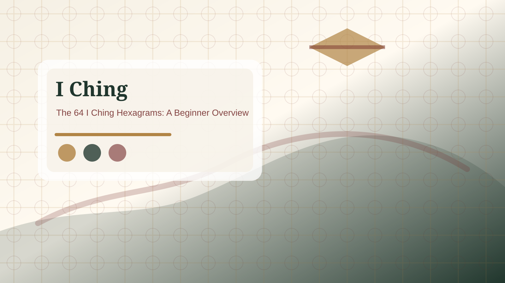

Do I need to know all 64 hexagrams?
No. Beginners can use the I Ching well by learning the reading sequence first, then using a 64-hexagram lookup for names, themes, and practical meaning.

Short answer
You do not need to memorize all 64 hexagrams before using the I Ching. Memorization can even distract beginners from the basic reading order. Start with one clear question, identify the primary hexagram, check whether there are changing lines, and then read the relating hexagram if one appears. The lookup table can support the process while your familiarity grows.
Answer expansion
What this answer means in practice
This added section makes Do I need to know all 64 hexagrams? easier to use because the page now explains its role before sending the reader deeper into I Ching reflection. It is meant for readers who need a concise answer plus enough context to avoid a misleading shortcut, so the next step is explicit instead of being hidden at the bottom of the page.

At a Glance
- Reading order
- Start with the question, then primary hexagram, changing lines, and relating hexagram.
- Best use
- Use the page for reflection and decision review rather than guaranteed prediction.
- Next step
- Open the tool or hexagram page only after the practical question is clear.
For this topic, the useful context is question framing, hexagrams, changing lines, relating hexagram, and calm decision review. Read the existing page first, then use the facts and reference table below to decide whether you need a guide, tool, comparison page, or report-style overview.

Quick Reference
| Page role | article or page |
|---|---|
| Reader question | What should I understand or do after reading about do i need to know all 64 hexagrams? |
| Next-step context | question framing, hexagrams, changing lines, relating hexagram, and calm decision review |
| Trusted background | Britannica Yijing overview |
If the page is being used for a real choice, keep the decision small: define the question, compare the evidence, follow one related internal page, and only then decide whether the topic needs a deeper guide. That prevents do i need to know all 64 hexagrams from becoming a generic answer with no practical route.

Practical Questions About Do I Need To Know All 64 Hexagrams
What is the first useful takeaway from Do I need to know all 64 hexagrams? | I Ching FAQ?
Turn the answer into one practical question: what is moving, what needs restraint, and what should be checked in real life?
Should I treat this as a prediction?
No. Use it as a reflective reading framework, especially when a decision needs calmer language and better timing.
What should I open after this page?
Use the free reading tool for a fresh question, or the hexagram guide when a line or relating hexagram needs context.
When should I stop repeating a reading?
Stop when the repeated question is replacing action, conversation, or factual checking.
What to learn first
Learn what a hexagram is, why lines are built from bottom to top, and how changing lines create movement. These basics help more than trying to remember every traditional name at once. Once the structure is clear, the hexagram names become easier to understand because they connect to actual reading situations.
Concrete example
Suppose you cast Hexagram 5, Waiting. You do not need to know all 64 names to begin. You can first ask what kind of waiting is involved: preparation, timing, nourishment, or patience before action. If a changing line leads toward another hexagram, then compare the two themes. The reading becomes a practical reflection instead of a memory test.
How to build familiarity
Use the 64-hexagram page as a reference. After each reading, write down the number, name, plain-English theme, and one real-world action. Over time, you will notice common patterns such as conflict, return, limitation, progress, and repair. Repeated use builds understanding more reliably than forcing memorization.